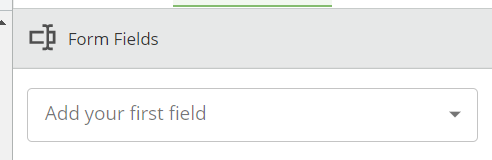
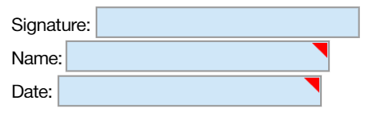
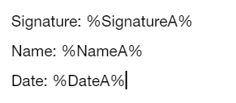

What are anchor strings?
Remember in OnTask how you place the form fields? (That look something like this)
 Using anchor strings is our way of placing where these fields go and telling OnTask which type of field we need. So in this example above we would type this instead:
This section below "Fields Help" is to help you create the anchor strings and avoid error and save you time